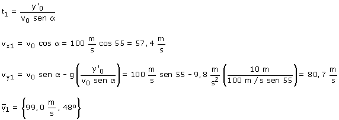
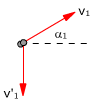

b)
Velocidad del proyectil en el instante del choque:


En el momento del choque la velocidad del proyectil forma 48º con la horizontal y la velocidad de la piedra es vertical hacia abajo.
El ángulo formado por las velocidades será: 48º + 90º = 138º